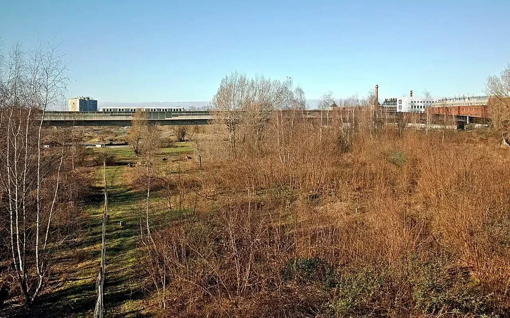

Dossier public
Habitat Vivant
Réhabiliter les logements vacants et dégradès pour redonner vie aux territoires.

Le pôle Habitat Vivant vise à structurer une réponse progressive aux logements vacants, dégradès ou sous-utilis’s, dans une logique de remise en usage, de dignité, de sobriété et de coopération locale.
Objectif du pôle
Construire une méthode capable d'aider les territoires à repérer, qualifier et remettre en mouvement le patrimoine résidentiel vacant, sans promettre d'intervention avant étude des conditions locales.
Travailler avec les autres pôles
Habitat Vivant peut mobiliser la Matériauthèque Solidaire pour le réemploi, l'Observatoire pour le repérage et Solidarité & Insertion pour des parcours de chantier ou d'engagement.
Dispositif phare : Bien Solidaire à Usage Partagé
Le pôle Habitat Vivant porte le programme Bien Solidaire à Usage Partagé pour étudier la remise en État de logements vacants, immeubles dégradès, commerces fermés, bâtiments inutilisés ou terrains abandonnés, avec une convention d'usage temporaire respectant la propriété du bien.
Pourquoi ce pôle existe
Problèmes actuels en France
De nombreux territoires sont confrontés à des logements vacants, dégradès ou difficiles à remettre en usage, alors que les besoins résidentiels restent forts.
Objectifs du pôle
Repérer, qualifier, accompagner et orienter les situations vers des solutions réalistes : rénovation, occupation temporaire, habitat partagé ou réponse solidaire.
Résultats attendus
Des logements mieux identifiés, des propriétaires mieux orientés, des collectivités mieux outill’es et des projets plus sobres lorsqu'ils deviennent possibles.
Notre méthode d'action
Identifier les logements vacants, dégradès ou sous-utilis’s à partir d'observations, de signalements et de données qualifiées.
Comprendre le contexte : propriété, État apparent, contraintes, potentiel d'usage et acteurs à mobiliser.
Structurer le dialogue avec propriétaires, collectivités, associations, artisans et habitants.
Relier chaque situation à une solution adaptée, sans promettre d'intervention avant étude du cadre local.
Exemples de projets possibles
Rénovation de logements vacants
Remise en État progressive de biens pouvant retrouver un usage résidentiel.
Occupation temporaire
Usage transitoire encadrà lorsqu'un lieu peut être utile avant un projet définitif.
Habitat partagé
Solutions collectives et intergén’rationnelles adaptées aux besoins locaux.
Logement d'urgence
Orientation vers des réponses temporaires lorsque le cadre juridique, technique et social le permet.
FAQ Habitat Vivant
L'association rénove-t-elle déjà des logements ?
Non. Le pôle prépare une méthode et des coopérations. Les interventions réelles devront être étudiées, financées et sécuris’es.
Peut-on signaler un logement vacant ?
Oui, un signalement peut être préparé, puis vérifié avant toute utilisation publique ou opérationnelle.
Le propriétaire est-il associé ?
Oui. Aucun projet ne peut être envisagé sans cadre clair, accord des parties concern’es et respect du droit.
Explorer les autres pôles
Du logement inoccupé à une solution d'habitat utile
Habitat Vivant traite d'abord une question très concrète : pourquoi un logement reste vide, dans quel état il se trouve, qui peut décider, quels travaux sont nécessaires et quel usage peut être rendu possible sans fragiliser le propriétaire ni les planifiés occupants.
1. Proposer
Le propriétaire ou un acteur local signale un logement vacant, dégradé ou sous-utilisé.
2. Vérifier
TVF rassemble les informations minimales : adresse, statut, état visible, contraintes et interlocuteurs.
3. Diagnostiquer
Une visite ou une analyse technique doit préciser les risques, les travaux, les diagnostics et l'assurance.
4. Scénariser
Usage possible : logement temporaire, habitat partagé, solution étudiante, intergénérationnelle ou solidaire.
5. Conventionner
Durée, travaux, charges, usage, responsabilités et restitution doivent être écrits.
6. Suivre
Le projet est suivi avec des preuves : devis, photos autorisées, compte rendu, indicateurs et bilan.
| Public concerné | Besoin | Réponse Habitat Vivant |
|---|---|---|
| Propriétaire | Sortir d'une vacance subie sans perdre la propriété du bien. | Diagnostic, scénario d'usage, convention, recherche de ressources et suivi. |
| Collectivité | Remettre du logement dans le parc existant et limiter la dégradation. | Repérage, priorisation, lien avec les dispositifs habitat et lecture territoriale. |
| Habitants | Accéder à des lieux remis en état et utiles. | Usages adaptés au besoin local, sans annoncer de logement disponible avant validation. |
TVF devient-elle propriétaire du logement ?
Non. Le propriétaire conserve son bien. Le cadre peut prévoir un usage temporaire, une coopération ou un accompagnement, selon le projet.
Un logement signalé est-il automatiquement retenu ?
Non. Il doit être juridiquement, techniquement et financièrement qualifié.
Quels partenaires peuvent être concernés ?
Propriétaires, communes, EPCI, opérateurs habitat, artisans, assureurs, financeurs, associations et habitants.
Habitat Vivant : transformer une vacance subie en usage utile
Cette page se concentre sur la chaîne habitat : repérage du logement, dialogue avec le propriétaire, diagnostic, scénario d'usage et cadre de travaux. L'objectif n'est pas de publier une liste de biens, mais de faire émerger des solutions habitables, sûres et adaptées aux besoins locaux.
Propriétaire
Clarifier les contraintes, les coûts, les possibilités d'usage temporaire et la convention avant toute mobilisation.
Collectivité
Relier le logement au besoin territorial : centre-ville, jeunesse, seniors, urgences sociales ou parcours résidentiels.
Habitants
Structurer des usages utiles sans promettre de logement disponible avant diagnostic, financement et validation.
Lecture opérationnelle
Comprendre rapidement Habitat Vivant
| Question | Réponse TVF | Preuve ou livrable attendu |
|---|---|---|
| Quel besoin traite la page ? | Qualifier une situation territoriale avant de proposer une action. | Fiche de lecture, diagnostic ou formulaire adapté. |
| Quels acteurs sont concernés ? | Collectivités, propriétaires, entreprises, associations, financeurs ou citoyens selon le sujet. | Interlocuteur identifié, rôle clarifié, accord de publication si nécessaire. |
| Comment passer à l'action ? | Documenter le besoin, choisir le parcours, rassembler les pièces et cadrer les responsabilités. | Fiche projet, convention, budget, calendrier et indicateurs. |
Habitat et biens vacants
Du constat à l'action : Habitat Vivant
Cette page doit permettre de comprendre comment passer d'un bien vacant ou dégradé à une remise en usage credible.
Problème
Un logement ou un bâtiment vacant peut dégradér une rue, perdre de la valeur et priver le territoire d'un usage utile.
Donnée utile
Repere national : pres de 3 millions de logements vacants sont recenses en France selon l'INSEE.
Solution TVF
TVF structure un parcours propriétaire : reperage, qualification, scenario d'usage, convention et suivi.
Méthode
Le bien n'est jamais annonce comme disponible avant verification juridique, technique, assurantielle et financiere.
Acteurs
Propriétaires, communes, EPCI, artisans, financeurs, associations, habitants et assureurs.
Impact visé
Remettre en usage le patrimoine existant, limiter la degradation et produire des lieux utiles sans artificialiser.
FAQ
Questions fréquentes sur ce pôle
Habitat Vivant traite les questions liées aux biens vacants, aux propriétaires, aux conventions et à la remise en état.
Un bien vacant peut-il être étudié sans engagement immédiat ?
Oui. Habitat Vivant sert d'abord à qualifier le statut du bien, l'état apparent, les contraintes et les usages possibles avant toute convention.
Le propriétaire conserve-t-il son bien ?
Dans Habitat Vivant, le cadre recherché repose sur une coopération écrite : propriété conservée, travaux ou usage encadrés, durée précisée et responsabilités formalisées.
Quelles preuves sont nécessaires ?
Pour Habitat Vivant, un diagnostic, des photos autorisées, les contraintes juridiques, les besoins locaux, les coûts estimatifs et les accords de publication doivent être rassemblés.
Passer à l’action
Choisir le parcours adapté à votre rôle
Chaque demande doit être orientée vers un cadre clair : besoin territorial, propriétaire, ressource, financement, bénévolat ou coopération institutionnelle.